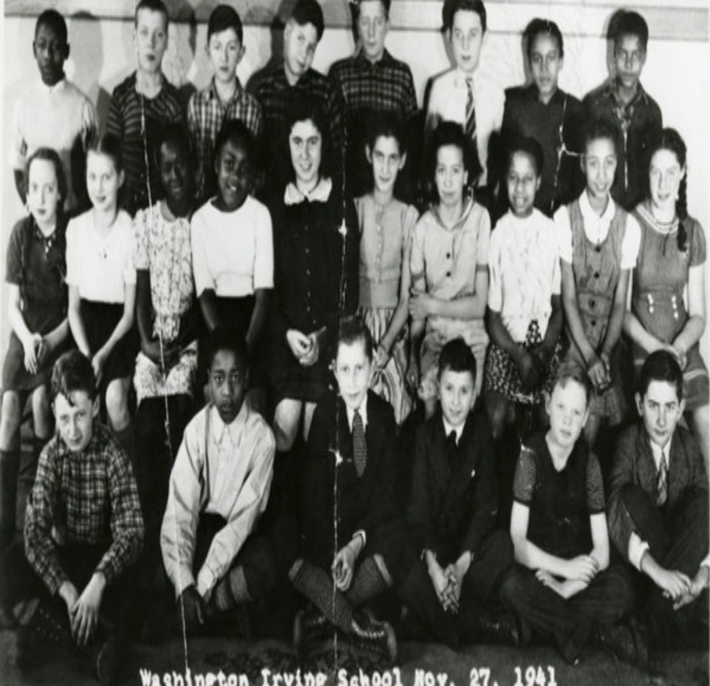

Racial disparities may be significant in today’s America, but how significant are they in the discussion about Nottingham high School and Liverpool high school. First, in order for the two schools to represent different races, it is necessary to identify how they are racially populated. According to a statistical analysis of Nottingham high school by USNews, 78.8% of the school is from minority groups, and 55.1% are black students (Nottingham High School, n.d). Whites are only 21.2%, Asian 11.4 and Hispanic 9.9% . In Liverpool High School, a similar article states that 24.2% of the students are from minority groups, 75.8% are white, 10.2% black, 5.0% Asian, and 4.7% Hispanic (Liverpool High School, n.d.). This shows that the majority of students from Nottingham high school are from minority groups, and the majority of those from Liverpool are White. Therefore, their performance would be a reflection of these racial groups.
The problems in education often manifested in the state of the US society in history. As Leggard (2020) explains while discussing the anti-racism resolution in Onondaga county, New York, it is historically evident that the very foundation of Onondaga county is tainted with black oppression. Leggard (2022) explains that a document exists that shows that during the 18th century, when Onondaga county was created, black Americans were regarded as property. As much as this constitutes to slavery, the anti-racism resolution which was passed in the county was edited to remove words like “slavery.” These actions may be argued as a step to prevent painting of all white Americans as racist, but does the anti-racism resolution achieve its goal of acknowledging and condemning the historical oppression of black Americans if it cannot bluntly acknowledge slavery as one form of the oppression?
The discussion on anti-racism resolution in Onondaga county ushers this discussion into the reflection of how similar disparities are experienced in today's America and among the black American population, especially the students in Nottingham High School. The editing of the anti-racism resolution in Onondaga county is, in fact, a perfect example. This is because, as Leggard (2022) explains, these edits were made by a white person and were a condition for that resolution to pass the legislative process. In addition, it is weird that the Onondaga county legislature only contains two people of color. This just shows that as much as progress has been made, equity is not a common phenomenon in the county. Some would go as far as to call it the modern-day representation of white supremacy. In another story, These very words have been used to describe a recent move in North Dakota, where the governor signed a legislation that banned the teaching of critical racial theory in schools (Goodman, 2021). According to Angela Davis, a respondent in the video describing these events, banning of "critical race theory" is an attempt to regain white supremacy and reduce minority power because race theory is a critical part of American History, and without knowledge of these events, the student may not grow up to stand against such racial disparities (Goodman, 2021). This shows that racial differences and the fight for racial power are still a significant problem in America, and the whites are clearly still at the top.
There are many other factors that contribute to poor performance among the black population. First, Black Americans still face significant racial discrimination. This often affects the students’ access to opportunities and gives them a disadvantage against their white peers. Leath et al.(2019) explain that discrimination is often harder among high school students because they are within their adolescent period, making them susceptible to emotional distress and could lead to mental health problems or substance abuse.
Discussing the sociology of African American experience is necessary to understand the social experiences experienced by this group. One of the main challenges in such studies is understanding the reason and impact of the disparities between African Americans and whites. In Onondaga County, New York, this has been a significant challenge across history. Today, it is evident that Liverpool high school, dominated by white students, performs significantly better than Nottingham High school, which is dominated by minority students. After analyzing a similar trend across history, this paper has identified that African Americans and other racial minorities face significant poverty, racial discrimination, and lack of cultural support compared to white students. This warrants a conclusion that, indeed, Liverpool High School performs better than Nottingham high school because the majority of the student population is white while that of Nottingham is black. Therefore, the challenges that black students face affect their performance, which explains why Liverpool students perform twice better than those in Nottingham.